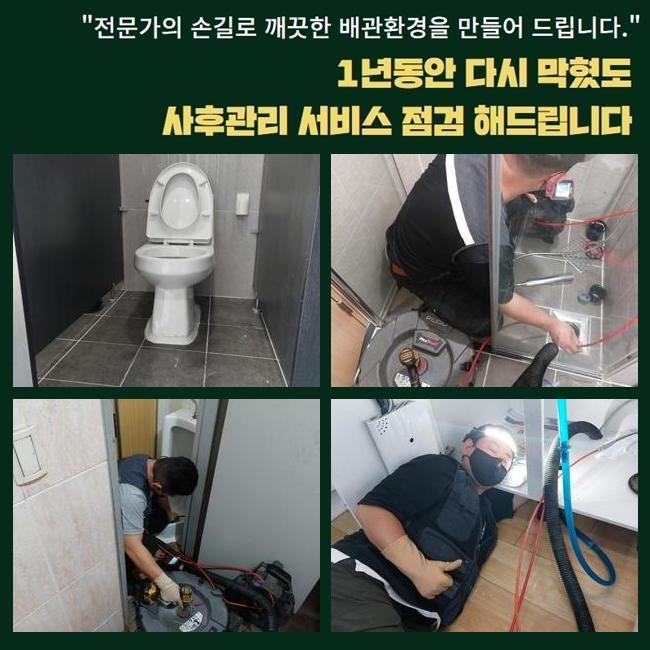
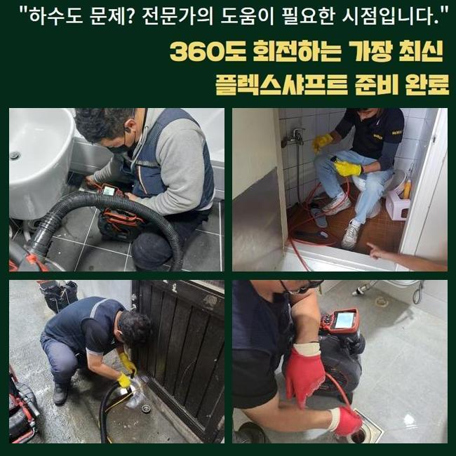
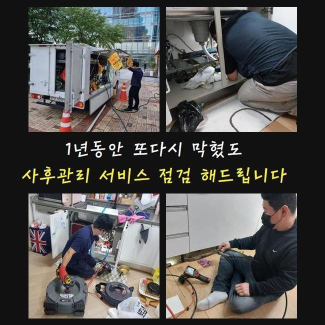
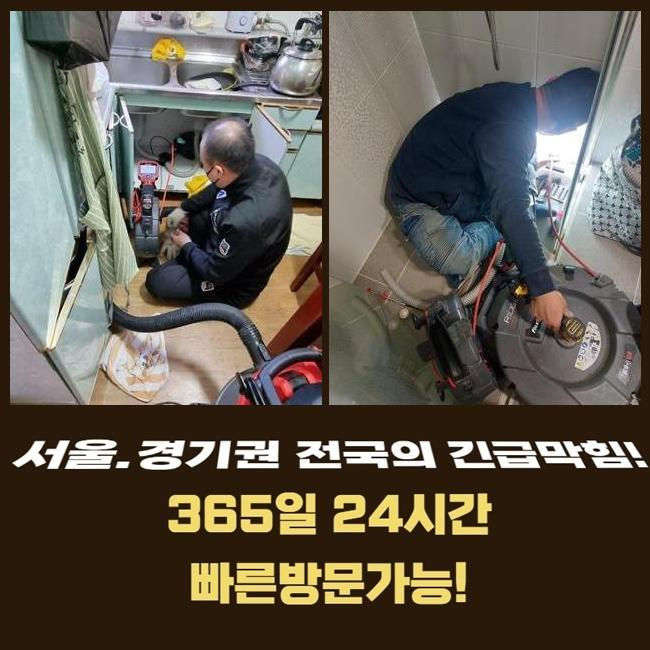
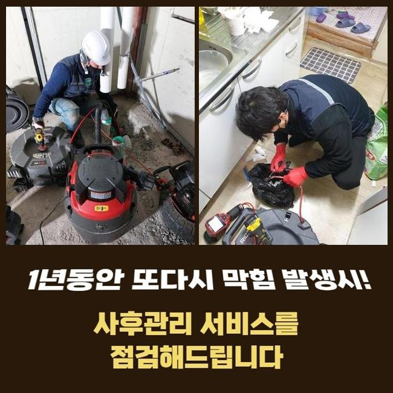
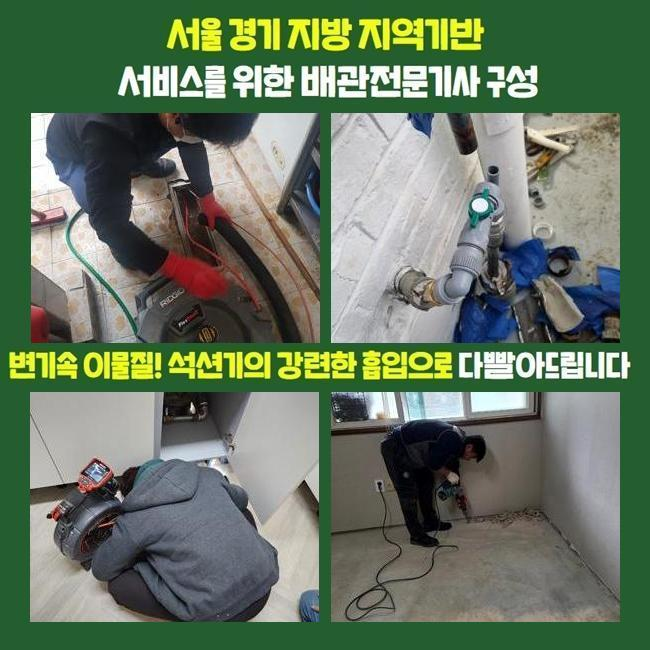
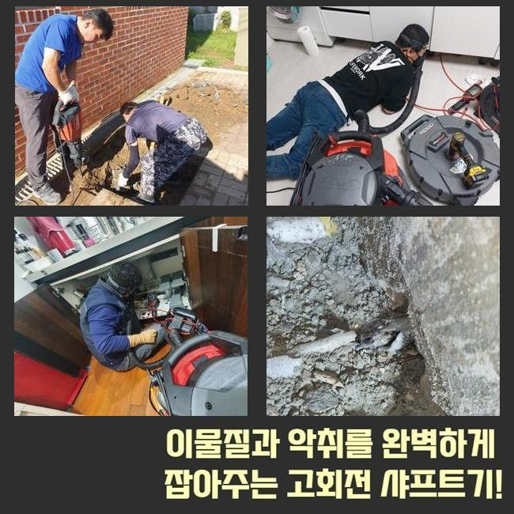

🏠 동대문 전농동세탁실역류 휘경동 하수구뚫어주는업체 설비하는곳
용인 하수구막힘 전문 시공 후기

📋 작업 개요
- 위치: 용인
- 서비스 유형: 하수구막힘, 배관막힘, 누수수리, 역류해결, 뚫는업체, 배관청소, 고압세척, 설비공사, 악취차단
- 작업 일시: 2025. 2. 18. 22:01
- 업체명: 하수구수사대 (010-5615-2118)
🔍 문제 상황
동대문 전농동세탁실역류 휘경동 하수구뚫어주는업체 설비하는곳
하수구 중단이 생기는 원인이 되는 건 여러가지인데 몇 개를 꼽자면 기름슬러지와 석회가 흔한 방해물이라고 뽑을 수 있습니다
인테리어 작업을 마치고 하수의 중단이나 역행이 벌어지는 경우는 시멘트나 석조 등을 원인으로 추정하는 것이 정답율이 높을 거에요
향후 소개할 현장도 뚫는 과정에서 다수의 이물질들을 속에서 목격하게 되었습니다
주거지에서 수로 막힘이 가볍게 나타난다면 인접한 주민들에게까지 피해가 진행될 수 있으므로 얼른 뚫고 고쳐드려야 합니다
게다가 상가라면 영업에 타격을 주는 커다란 골칫거리이므로 더욱 체계적이고 빠른 수선에 들어가야 합니다
이번 현장의 경우에는 앞서 작업을 완료한 인테리어 이후부터 갑자기 하수관이 정상작동하지 않아서 영업을 못하셨다고 합니다
보통 인테리어를 한 다음에 작업하고 남은 잔해를 수습하지 않고서 그냥 물로 씻어 없앤다면 이게 막힘이 되곤 합니다
다수의 사유들로 인해 관로가 봉쇄될 수 있는 부분이니 가능성을 여러가지라고 여기고 관측과 청소 장비를 가지고 현장으로 나아갔습니다
안쪽으로 들어서서 주변부를 싹 둘러봤는데 바닥에 설치된 하수구 구멍에서 막힘이 도래한 것이었습니다
석션을 가동하여 차올라있는 정화작업부터 시행하고서 내부에 고여있는 물을 없애주기 시작했습니다
빈틈없이 막혀서 석션만 돌려서는 완수를 할 수는 없었지만 후속 조치를 하기 위해서는 내부관측을 방해하는 더러운 오염수를 우선 치워야 했습니다

🔎 원인 분석
💡 전문가 진단: 정밀 진단 장비를 사용하여 슬러지의 고착 여부를 판명하고 타격/세척 작업을 실시했습니다.
막힌 하수구를 극복하기 위해서는 수작업뿐 아니라 장비의 힘이 무엇보다 중요합니다
우선은 흡입을 위한 석션과 갈아내는 샤프트는 필수이며 안을 명확하게 조사하고자 한다면 내시경도 함께 써야 합니다
배관 통로가 크거나 하부에 자리하고 있다면 강력한 파워를 지닌 고압세척기까지 동시에 쓸 수 있으니 매번 이것도 꼭 챙기고 있습니다
요즘은 여러 차원의 장치들이 다분화되어서 하수관 수선과정이 시간적으로 단축됩니다
심도 깊은 기술력이 미흡하면 장치를 정확하게 작동시키는 게 곤란할 것입니다
무엇이 잘못됐나 추적하지 않고서 장비만 세게 돌린다면 하수관의 심한 고장까지 도래할 수 있다보니 배관 관측 내시경으로 배관 속을 투명하게 밝혀보고 이어지는 본격적인 작업을 실행해야 합니다
석션으로 물을 다 빼내고 하수구 촬영 기기를 배관 속으로 쑥쑥 밀어넣어서 상태를 판단해 보았습니다
예측한 바와 같이 진흙같이 보이는 물질과 타일 같은 덩어리들이 한껏 차올라서 물 배출이 힘들다는 사실을 인지할 수 있었습니다
바닥 교체나 방수 등의 활동을 했다면 관로로 잔여물이 내려가지 않도록 자주 쓸어주면서 정리정돈을 해야 합니다
심층부에 이르러서 거대한 흰 덩어리가 목격됐는데 리모델링 도중에 일부 백시멘트가 진입되었고 뭉쳐서 응고가 된 것을 추론할 수 있었습니다
아무래도 공사하고 남은 백시멘트를 방출한 듯 했습니다
찌꺼기들로 뒤덮여있는 상태라 쉽게 뚫리지 않았던 겁니다

🔧 작업 과정
촬영장비로 관로 안을 봐주면서 분쇄를 진행하여 안전도를 높였습니다
샤프트로 오물들과 기름때를 절단해서 빼올려야겠다고 정했는데요
잘게 쪼개진 입자를 석션으로 흡입 처리를 했더니 덩어리가 밖으로 방출됐습니다
반복적으로 제거작업을 임했건만 말라붙은 시멘트가 접착력이 높게 붙어버려서 배관 교체작업까지 해야하는 심각한 상황으로 체험하게 됐어요
샤프트만으로는 깔끔한 해소가 안 될 듯 하여 관로에 타격을 줄 수 있는 절차가 계속되면 오염된 관로가 절단될 수 있겠다 싶었어요
바닥 쪽 타일을 걷어내서 배관을 직접 체크한 뒤에 계획을 짜보기로 했습니다
반드시 철거가 필요한 상황을 설명 후 굴착단계를 진행했습니다
카메라로 보았 듯 시멘트 덩어리가 가득 차올라서 관로가 중단된 것 같더라고요
바닥 양생작업을 하고나서 대강 처리된 미세분진들이 거대하게 성장했던 것입니다
흔히 사용하는 백시멘트는 건조가 빠르기 때문에 관로가 차단이 되는 상황들이 막힘 작업지에 가보면 흔히 보이곤 합니다
절단한 오염된 배관을 튼튼한 새 배관으로 연결지어줬어요
배관을 자르는 시점에도 절단면이 고르게 절개를 해주어야 하며 이어지는 부위에도 갭이 벌어지지 않아야 합니다
연결부를 이격이 일절 없도록 완성본을 내지 못하면 점점 틈새가 생기고 사이가 멀어지다가 누수로 업그레이드 될 때가 있어요
이어준 배관이 움직이거나 탈선하지 않게 내구성에 신경쓰며 이음새를 메꿔드렸습니다
내부에서 끌어올린 이물질들이 수북하게 꺼내졌습니다
이정도로 많은 침전물이 관로를 메우고 있었으니 통수가 이뤄질리가 없었습니다
하수가 정상적으로 이동하는지 대량의 물을 받아서 한 번에 인위적으로 붓는 방식으로 배수테스트에 돌입했습니다
더러운 물의 역류같은 증세가 없이 잘 배출되는 것까지 확인하고서 미장 시멘트를 깔아주었습니다
굴착한 곳에 시멘트 반죽을 채워넣어서 배관을 딱 붙게 만들고 그 다음은 평평하고 최종마감을 해줍니다


✅ 작업 완료
누수를 막기 위한 방수 작업을 거친 후에 기존과 비슷한 타일을 접착시켜줍니다
하수구를 손 본 이후에 새로 깔아준 바닥부에 방수기능은 넣어주지 못하면 아래에 위치한 이웃까지 누수사고가 일어나는 격이니 꼼꼼하게 시공 마무리를 끝마쳐야 할 것입니다
시멘트가 말라야하니 밟거나 이용하는 활동을 피하시라고 말씀드리고 전체 하수도 정비를 마침표를 찍을 수 있었습니다
하수구 막힐 때의 증상은 종잡을 수 없게 다양하지만 욕실 바닥의 막힘 역시 취약한 곳 중 하나라서 의뢰를 꾸준히 주시는 부분입니다
빠르게 내방드릴 수 있으니 언제든 문제를 알려주시면 정체된 하수관의 흐름을 안전하고 깔끔하게 고쳐드리겠습니다




⚠️ 베란다 누수 및 방수 관리 방법
- ✅ 비가 많이 올 때 창틀 주변이나 아래층 천장에 얼룩이 생기는지 정기적으로 확인해 보세요.
- ✅ 우수관 주변 실리콘 마감이 들뜨거나 깨진 틈새가 있는지 손상 여부를 수시로 체크하세요.
- ✅ 베란다 바닥 타일의 줄눈(메지)이 소실되면 그 틈으로 물이 침투하여 누수가 유발됩니다.
- ✅ 누수 의심 증상 발견 시 방치하면 아래층 손실이 커지므로 즉시 전문가의 진단을 받으십시오.
💡 핵심 정리
- 확실한 장비 작업(내시경 점검 및 샤프트 스케일링)으로 원인을 뿌리 뽑습니다.
- 작업 후 1년 이내에 동일한 부위 재발 시 100% 무상 A/S 서비스를 보장합니다.
- 서울 · 경기 · 인천 전 지역에 24시간 언제든 긴급 출동할 수 있도록 항시 대기 중입니다.
❓ 자주 묻는 질문 (FAQ)
🚨 용인 하수구막힘 문제로 고민이신가요?
정확한 원인 진단과 확실한 시공으로 재발 없는 해결을 약속드립니다.
24시간 긴급 출동 | 서울 · 경기 · 인천 전지역 | 1년 내 재발 시 무상 A/S